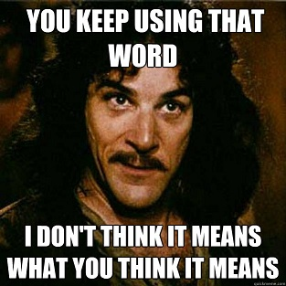

Comentarios
A estas alturas debería quedarles claro que mi último post fue bastante “catártico”...
O como se diga. Lo que pasó es que me sentí molesto por una discusión, por dos discusiones en realidad, que llegaron al mismo final. Como sea, igual yo también tengo algo de culpa por no aprender nunca la lección... En fin, al final para controlar mi enojo seguí el consejo de uno de mis filósofos favoritos Emile Cioran:
“Escribir es un alivio extraordinario. Y publicar también. Esto les parecerá ridículo y, sin embargo, es muy cierto.[...] Se desprende uno de todo lo que ama y sobre todo de todo lo que detesta de uno mismo. Iré más lejos, si no hubiese escrito, hubiera podido convertirme en un asesino. La expresión es una liberación. Les aconsejo que hagan el ejercicio siguiente: cuando odien a alguien y sientan ganas de liquidarle, cojan un trozo de papel y escriban que Fulano es un puerco, un bandido, un crápula, un monstruo. En seguida advertirán que ya lo odian menos. Es precisamente lo mismo que yo he hecho respecto de mi mismo. He escrito para injuriar la vida y para injuriarme. ¿Resultado? Me he soportado mejor y he soportado mejor la vida.”
Así que eso es lo que hice, nada más, después de todo este es mi blog y hago lo que quiero en él, y si quiero puedo usarlo como mecanismo de catarsis.

Or whatever.
Sin embargo, debo hacerme responsable de mis dichos, y también mantener un cierto grado de higiene mental en este ambiente virtual que he construido.
Lo que pasa es que, aunque ustedes no lo notan, este blog recibe de vez en cuando comentarios bastantes desagradables, que no aportan a la discusión e incluso son provocadores, que si los aprobara convertirían este sitio en un lugar poco grato.
Mantener un blog obliga a tener una política sobre los comentarios del blog, pero he caido en cuenta que nunca les he contado cuál es mi política sobre comentarios.
Así que vamos a resolver eso, acá están las reglas de moderación de este sitio o al menos los criterios que he aplicado hasta ahora, los que pueden cambiar más adelante, pero consideren esto como la “legislación vigente” hasta ahora:
- Este blog usa disqus como plataforma de comentarios, así que para emitir sus opiniones deben registrarse con ese servicio. Sugiero leer sus términos de servicio.
- No acepto comentarios anónimos, es bueno saber quién dice lo que dice y que se haga responsable. A veces acepto el nickname usado en alguna red social, pero esos casos los trato en forma particular.
- El comentario no debe fomentar el odio a las personas. Puedes estar en contra de mi ideas y exponer las razones por las que consideras que estoy equivocado o está equivocado cualquier otro comentarista, pero te pido que des un argumento, no acepto ataques personales a nadie, ni menos provocaciones. Mantengamos este espacio en armonía.
- La idea es que tu comentario aporte al debate. No hay problema si aportas con algún chiste, pero que sea ingenioso y sirva para distender el ambiente, pero si no aporta algo positivo, o es sólo una payasada no será aceptado.
- Tampoco acepto SPAM, es decir, ningún tipo de promoción de productos o sitios web. Cuando los comentarios vienen con muchos links se van automáticamente a la cola de moderación, porque podrían ser spam, así que toma un tiempo revisarlos, ten paciencia.
- Puedo cerrar los comentarios para un post en cualquier momento. En general trato de no hacerlo, pero a veces es necesario porque las discusiones están corriendo el peligro de no llevar a ninguna parte, o simplemente no tengo la capacidad para seguir moderando.
- El criterio final para rechazar un comentario es mío, y cuando lo haga no tengo porque darles ninguna explicación.
Esas son las reglas sobre comentarios en este blog.
Si he borrado un comentario tuyo y consideras que no tenía derecho a hacerlo, intenta contactarme, no es tan difícil. Puede que la respuesta siga siendo negativa, o que no te atienda nunca y quizás me odies por eso, en ese caso te sugiero aplicar el consejo de Cioran: arma tu blog y escribe cuanto me odias porque no publiqué tu comentario, capaz que al hacerlo se te pase el enojo.